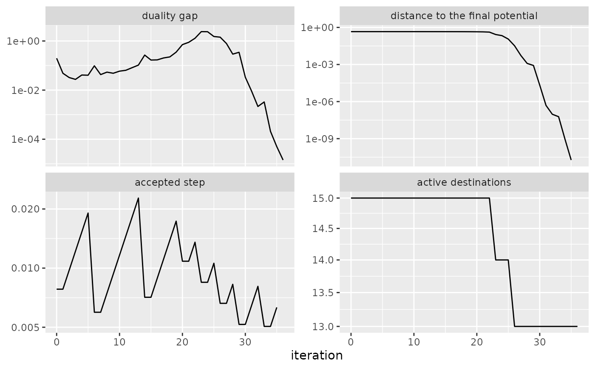
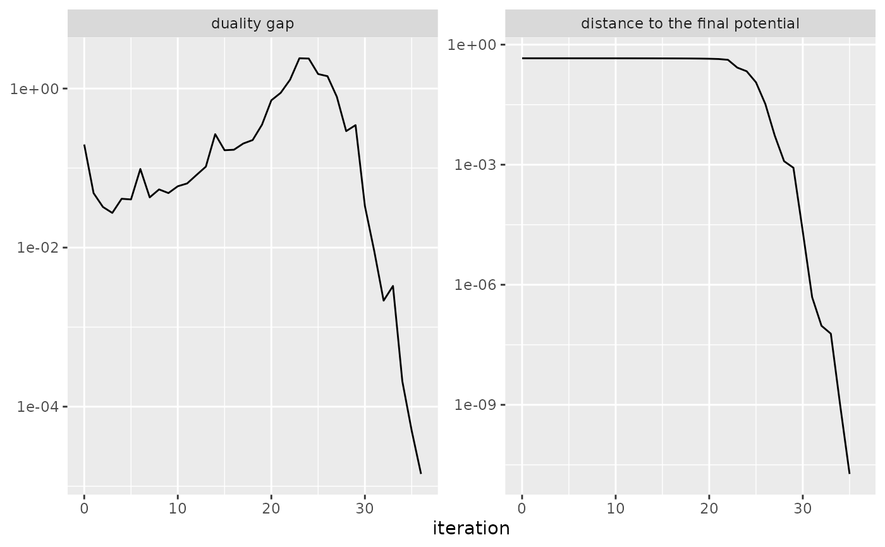

Displays the iteration history of the gradient algorithms of blvim(), as
returned by sim_history(), for one model or for a collection of models.
Arguments
- object
a data frame of class
blvim_historyproduced bysim_history()- what
the quantities to display, one or several of
"gap","potential","step","n_active"and"min_U"- max_colours
the largest number of runs for which each run has its own colour
- ...
additional parameters (not used currently)
Details
Each selected quantity is shown in its own panel, on a logarithmic scale, as a function of the iteration number:
"gap": the duality gap;"potential": the difference between the final potential of the run and its current potential;"step": the accepted step of the line search;"n_active": the number of active destinations, which changes when the ascent moves from one face of the simplex to another;"min_U"(not shown by default): the smallest rescaled attractiveness. It drops to zero, and is no longer shown, as soon as a destination vanishes, so it is mainly useful for runs that stay in the interior of the simplex.
Values that are not positive (for instance the final step, or the
distance to the final potential at the last iteration) are not shown. For
a collection of models, each run has its own line, coloured by model when
there are at most max_colours of them.
Examples
distances <- french_cities_distances[1:15, 1:15] / 1000
production <- rep(1, 15)
attractiveness <- rep(1, 15)
model <- blvim(distances, production, 1.5, 1 / 50, attractiveness,
algorithm = "gradient", bipartite = FALSE,
control = blvim_gradient_control(history = TRUE)
)
ggplot2::autoplot(sim_history(model))

ggplot2::autoplot(sim_history(model), c("gap", "potential"))
